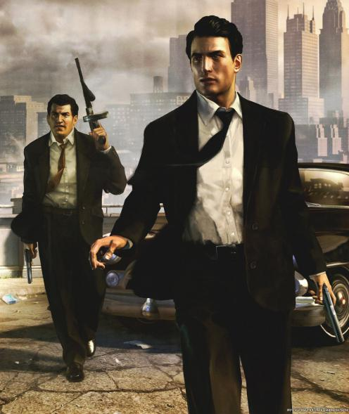

Первая работа на css
Mafia 2

Mafia II — компьютерная игра в жанре приключенческого боевика с открытым миром, сочетающего в себе автомобильный симулятор и шутер с видом от третьего лица, разработанная чешской компанией 2K Czech (ранее: Illusion Softworks); вторая игра серии Mafia. Сюжет Mafia II, за исключением некоторых отсылок, не имеет связи с оригинальной игрой, однако существует с ней в одной вселенной.
Игра была выпущена 24 августа 2010 (27 августа — в России) на персональном компьютере (Windows) и игровых приставках Xbox 360 и PlayStation 3; в 2011 году вышла на Mac. Зарубежным издателем является американская компания 2K Games, в России издана и переведена на русский язык компанией «1С-СофтКлаб».
История разработки
Разработкой занималась компания 2K Czech, ранее известная как Illusion Softworks. Предыдущей частью является Mafia: The City of Lost Heaven, созданная этой же компанией и поступившая на прилавки магазинов в 2002 году (стоит заметить, что в данных играх различные истории, однако есть некоторые сюжетные отсылки).
Первые сведения о том, что Mafia II пребывает в разработке, появились в 2003 году, когда об этом факте сообщила компания Illusion Softworks[3][4] (таким образом, до её выхода в 2010, она находилась в разработке семь лет).
Из интервью с продюсером игры, Лукашом Кюре (чеш. Lukas Kure), стало известно, что первоначально команда разработчиков хотела сделать дополнение к Mafia 1 и даже начала его разработку, но впоследствии было решено сфокусироваться на создании полноценной второй части.[5] (В другом интервью разработчиков — «Изначально мы собирались выпустить пару дополнений на том же движке и с теми же материалами, но увидев успех проекта, мы решили, что нужно замахнуться на что-то новое»[6]).
Дальнейшие новости появились 21 августа 2007 года: игра была представлена на выставке Leipzig Games Convention. Было выпущено несколько предварительных скриншотов, объявлены общие сведения: так, стало известно, что действие сюжета развернется в конце 1940-х — начале 1950-х годов, игрокам вновь будет предложена кинематографическая история и город, свободный к исследованию.[7]
В 2008 году частная компания Illusion Softworks стала дочерним предприятием издателя 2K Games, а название компании было изменено на 2K Czech.[8]
В 2009 году стало известно, что выход откладывается и состоится не раньше 2010 года.[9] В том же году, в августе, она была продемонстрирована прессе на выставке gamescom [10][11], где получила награду лучшей показанной игры, а компания 2K Czech — лучшей игровой студии.[12]
Позднее, в начале 2010 года вновь появились сведения о том, что выпуск задержится — проект должен был выйти не в мае 2010, а в августе-октябре.[13] В мае появились сведения о том, что в игре будут использоваться Nvidia 3D Vision — для возможности стереоскопического изображения, и физический движок PhysX.[14]
В конце мая было анонсировано коллекционное издание, куда, помимо диска с самой игрой в металлической коробке, вошли альбом иллюстраций в твёрдом переплёте, компакт-диск с музыкой из игры, карта города, в котором происходит действие, а также дополнение Made Man Pack — первое из нескольких впоследствии выпущенных дополнений (также называемых DLC — загружаемый контент).[15] В июле 2010 стало известно, что игра будет продаваться в сервисе цифровой дистрибуции Steam компании Valve, и будет с полной поддержкой его возможностей, таких как статистика и система достижений.[15] Таким образом, она является Steam-игрой, ведь коробочная, а не только цифровая, версия также связывается после установки с учётной записью Steam.[2]
ВЫХОД ИГРЫ
Выход Mafia II состоялся 24 августа 2010 года на всех заявленных ранее платформах: издателем 2K Games она была издана на персональном компьютере под управлением ОС Microsoft Windows и консолях Xbox 360 и PlayStation 3. Помимо коробочного (розничного) варианта, как уже было упомянуто, она вышла в сервисе Steam.
1 декабря 2011 года состоялся выпуск на компьютерах Mac, управляемых Mac OS X. Игра — сразу в варианте Mafia II: Director’s Cut, который включает в себя все дополнения (такое же название имеет и издание для Windows, в котором уже поставляются дополнения) — стала доступна в сервисе Mac App Store[16][17], кроме того, версия для Mac может быть приобретена в Steam (в связке с Windows-версией).
Якупов Тимур
Влад лох